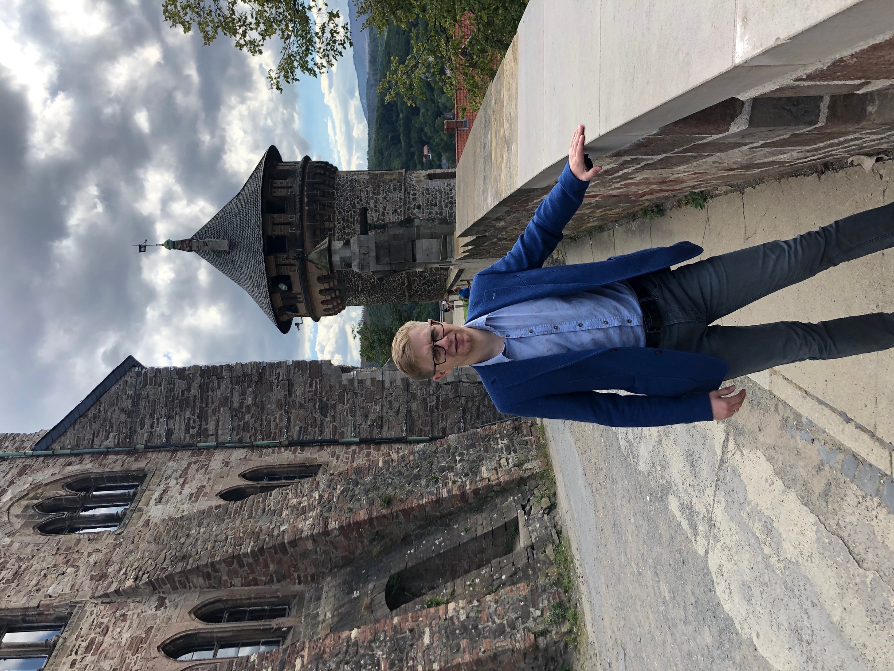

Dmitrij Kormakov
Всем доброго времени суток! Приветствую Вас на моей странице-визитке!
Я увлекаюсь различными ИТ-технологиями. Ранее это было всего лишь школьным хобби, и сейчас это увлечение переходит на более высокий уровень. В данный момент я прохожу обучение в ИТ-школе TelRan. После окончания школы планирую работать профессиональным ИТ-инженером (разработчиком). Считаю, что за ИТ будущее, это позволяет автоматизировать многие процессы и превратить примитивный физический труд людей в увлекательный, научно-творческий процесс. ИТ – это эволюция, непрерывное развитие.